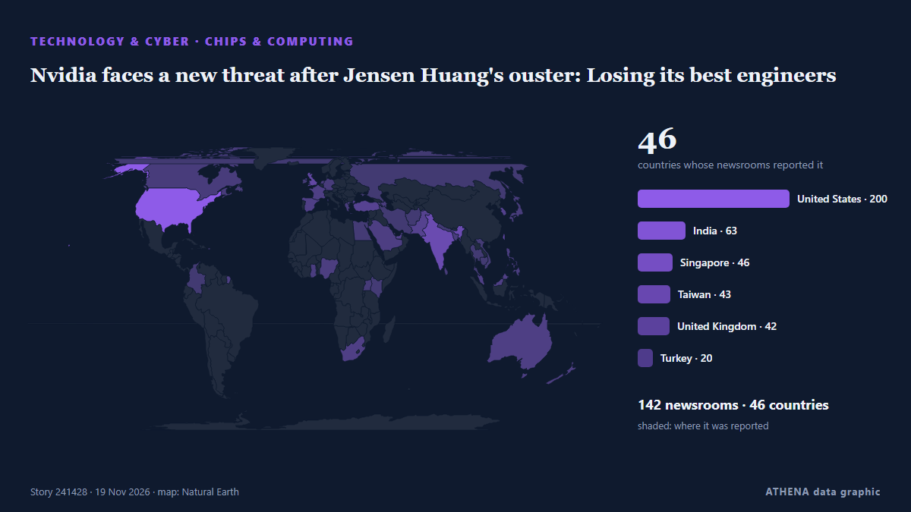

Nvidia faces a new threat after Jensen Huang's ouster: Losing its best engineers

Nvidia is offering better compensation to try to retain engineers after Jensen Huang's ouster. από Business Insider
Αναφέρθηκε ανεξάρτητα από 141 μέσα σε 46 χώρες από τις 9 Νοε, πρώτο το CBC News (alternative feed)· η κάλυψη εξασθενεί. Το ATHENA εκτιμά τον κίνδυνο αυξημένο (4.4/10), κυρίως λόγω της σοβαρότητάς του και της εμβέλειάς του. Βεβαιότητα 87% (υψηλή): το επιβεβαιώνουν 141 ανεξάρτητα μέσα, μέση αξιοπιστία 72%. Μέσα ανά χώρα: Ηνωμένες Πολιτείες (7), Σιγκαπούρη (6), Ηνωμένο Βασίλειο (5). Κάλυψη: 9 Νοε έως 19 Νοε, 228 ώρες.
Γιατί έχει σημασία: Οι εξελίξεις στην τεχνολογία και την κυβερνοασφάλεια διαμορφώνουν την ασφάλεια, τον ανταγωνισμό και τους κανόνες της ψηφιακής ζωής.
Τι άλλαξε: 101 νέες αναφορές από 55 μέσα στο 24ωρο έως 19 Νοε.
Πρώτη διατύπωση: Jensen Huang summoned to testify before US Senate committee, White House weighs Commerce Secretary Lutnick's ouster
ΑυτοματοποιημένοΕπιλέχθηκε, ομαδοποιήθηκε και βαθμολογήθηκε με τη δημοσιευμένη μέθοδο της ATHENA από 29 ανεξάρτητα μέσα. Ο τίτλος είναι του μέσου· οι προτάσεις της ATHENA ακολουθούν σταθερά πρότυπα - δεν τις γράφει παραγωγική ΤΝ. Πώς λειτουργεί →
Πώς να διαβάσετε αυτή τη σελίδα
- Τι διαβάζετε
- 141 μέσα σε 46 χώρες ανέφεραν αυτό το γεγονός. Οι αναφορές παρακάτω εμφανίζονται με τη σειρά που δημοσιεύτηκαν· κάθε τίτλος ανοίγει το αρχικό άρθρο. Το ATHENA δεν γράφει δικά του ρεπορτάζ.
- Η εκτίμησή μας
- Για την καταγραφή — Οι αναφορές περιγράφουν ένα ολοκληρωμένο, εσωτερικό, εμπορικό ή προσωπικό ζήτημα. Το καταγράφουμε ώστε να βλέπετε ποιος το ανέφερε και πότε. Δεν παρακολουθούμε εδώ κίνδυνο ευρύτερης σύγκρουσης.
- Πόσα στοιχεία υπάρχουν
- Ισχυρή Πολλά ανεξάρτητα μέσα σε πολλές χώρες περιγράφουν το ίδιο γεγονός.
Αφού αφαιρεθούν οι επαναλήψεις, τα άσχετα και τα παλιά στοιχεία, υπολογίζονται 26 από τις 40 αναφορές που παρατίθενται· το 95% των τίτλων αντιστοιχεί στο γεγονός.
Περίπου το 35% των τίτλων είναι ανάλυση ή άποψη και όχι απλό ρεπορτάζ.
- Τι δεν σημαίνει
- Το ATHENA μετρά πώς καλύπτεται ένα γεγονός, όχι αν είναι αληθές. Δεν είναι πρόβλεψη, κρίση για το ποιος έχει δίκιο ή συμβουλή.
- Τι θα την άλλαζε
- Αναφορές από άλλα ανεξάρτητα μέσα που δείχνουν διαφορετική εξέλιξη, ή σαφής επιβεβαίωση ή διάψευση από επίσημη πηγή.
Εκτίμηση R2 · ανανεώνεται με κάθε ενημέρωση της σελίδας. Το ATHENA δεν έχει δημοσιεύσει ακόμη ιστορικό επιδόσεων για αυτές τις εκτιμήσεις· όταν το κάνει, θα συνδέεται εδώ.
Με μια ματιά
Επιλέγεται, βαθμολογείται και γράφεται από τη δημοσιευμένη μεθοδολογία του ATHENA. Κανένας συντάκτης δεν παρεμβαίνει σε μεμονωμένα γεγονότα. Πώς παράγεται ›
| 09 Nov 13:48 UTC | 1 |
|---|---|
| 10 Nov 01:48 UTC | 0 |
| 10 Nov 13:48 UTC | 0 |
| 11 Nov 01:48 UTC | 0 |
| 11 Nov 13:48 UTC | 0 |
| 12 Nov 01:48 UTC | 0 |
| 12 Nov 13:48 UTC | 1 |
| 13 Nov 01:48 UTC | 9 |
| 13 Nov 13:48 UTC | 8 |
| 14 Nov 01:48 UTC | 6 |
| 14 Nov 13:48 UTC | 4 |
| 15 Nov 01:48 UTC | 19 |
| 15 Nov 13:48 UTC | 36 |
| 16 Nov 01:48 UTC | 41 |
| 16 Nov 13:48 UTC | 107 |
| 17 Nov 01:48 UTC | 88 |
| 17 Nov 13:48 UTC | 175 |
| 18 Nov 01:48 UTC | 78 |
| 18 Nov 13:48 UTC | 45 |
| 19 Nov 01:48 UTC | 14 |
| 16 Nov 16:55 UTC | 5.1 |
|---|---|
| 18 Nov 15:53 UTC | 4.5 |
| 19 Nov 06:08 UTC | 4.4 |
Γιατί αυτοί οι αριθμοί
Σημασία
Κίνδυνος
Βεβαιότητα
Η κάλυψη — ποιος το ανέφερε και πότε
ο τίτλος όπως δημοσιεύτηκε · ανοίγει το πρωτότυπο- CBC News (alternative feed) · ΚαναδάςFormer Nvidia CEO Jensen Huang signals willingness to return as CEO
- DigiTimes Asia · ΤαϊβάνAnalysis: Relationships built on Jensen Huang's personal ties now face test
- VnExpress International · ΒιετνάμJensen Huang summoned to testify before US Senate committee, White House weighs Commerce Secretary Lutnick's ouster
- The Business Times · ΣιγκαπούρηJensen Huang, US Commerce Secretary Lutnick summoned to testify on Capitol Hill in push for Nvidia enquiry
- DigiTimes Asia · ΤαϊβάνNvidia's 14-point GPU checks tighten AI server supply; full prepayment and 2027 price hikes loom
- Indian Express · ΙνδίαWhy Nvidia’s spy scandal may cost Howard Lutnick his US Cabinet job
- Express Tribune · ΠακιστάνUS Senate Banking Committee chair calls on Jensen Huang, Lutnick to testify
- DW English · ΓερμανίαUS Senate asks Huang, Lutnick to testify on Nvidia
- Al Jazeera English · ΚατάρUS Senate summons Nvidia’s Huang, Lutnick to testify
- New York Times Business · Ηνωμένες ΠολιτείεςA Scorecard for Huang’s Exit From Nvidia
- Times of India · ΙνδίαUS treasury secy flags 'lots of leakage' in US chip exports, slams Nvidia & Lutnick
- Financial Times - Global economy · Ηνωμένο ΒασίλειοBessent blames Lutnick’s commerce department for failure to blacklist Megaspeed
- The Business Times · ΣιγκαπούρηJensen Huang, US Commerce Secretary Lutnick summoned to testify on Capitol Hill in push for Nvidia inquiry
- The Independent · Ηνωμένο ΒασίλειοNvidia fallout deepens as Trump official blames commerce secretary for lack of controls
- New York Times Business · Ηνωμένες ΠολιτείεςAsian Americans Share Disappointment and Fear After Jensen Huang Scandal
- Asharq Al-Awsat (English) · Σαουδική ΑραβίαUS Treasury Chief Blames Commerce Dept for Failure in Nvidia Scandal
- Tehran Times · ΙράνJensen Huang’s exit leaves a much bigger story unexplained
- BBC News · Ηνωμένο ΒασίλειοHow the Jensen Huang scandal created a headache for business-friendly Singapore
- The Straits Times · ΣιγκαπούρηWith Jensen Huang out, Asian Americans lose a star, and fear what comes next
- DigiTimes Asia · ΤαϊβάνJensen Huang's Nvidia era may be over. But Taiwan isn't ready to say goodbye.
- DigiTimes Asia · ΤαϊβάνHuang's resignation unlikely to disrupt Taiwan's AI industry, Acer founder says
- Anadolu Agency (English) · ΤουρκίαSingapore held Alice Huang’s passport for months but got little US assistance in Nvidia chip investigation: Report
- The Independent Singapore · ΣιγκαπούρηJensen Huang’s 3rd affair allegations with 2nd Nvidia employee fuel divorce speculation; wife could get S$90B upon separation
- Tom's Hardware · Ηνωμένες ΠολιτείεςCommemorative plaque at Denny’s booth where Nvidia was born has been removed (Update: Plaque Now Restored)
- Luxembourg Times · ΛουξεμβούργοArm boss Rene Haas approached in Nvidia CEO search
- Middle East Eye · INTThree Israelis emerge as possible successors to Nvidia chief Jensen Huang, local media says
- The Independent · Ηνωμένο ΒασίλειοInsiders predict Jensen Huang ‘will have a second act’ as resurfaced images show him embracing alleged Chinese spy
- The Independent Singapore · Σιγκαπούρη‘Whatever... I don't care’ — Ex-Nvidia CEO Jensen Huang says his primary concern is his wife and avoiding ‘ruining the lives’ of women linked to him rather than his own fate
- Khaama Press · ΑφγανιστάνReddit Meme Calls Zuckerberg the ‘Last Faithful Billionaire’ as Nvidia’s Huang Steps Down
- ThisDay (Nigeria) · ΝιγηρίαNigerian-American Professor John Dabiri Sits on NVIDIA Board Amid Jensen Huang’s Exit
- NDTV · ΙνδίαJensen Huang's Daughter Took Pics As He Hugged 'Chinese Spy' At Dinner: Report
- Deadline · Ηνωμένες ΠολιτείεςBowen Yang Returns To ‘Saturday Night Live’ As Jensen Huang In Cold Open That Skewers Tech Billionaires’ Susceptibility To Honey Pot Plots
- New Straits Times · ΜαλαισίαIn Taiwan, Jensen Huang's 'flawless' image damaged by affairs
- Indian Express · Ινδία‘I hope you die’: Jensen Huang abused, threw bottle at staffer, says report
- to vima · ΕλλάδαHow Jensen Huang Built the Backdoor Route That Keeps Beijing in the AI Race
- The Independent Singapore · Σιγκαπούρη‘If you believe in the mission, bring back THE boss’ — Nvidia employees petition for Jensen Huang’s return, saying ‘Nvidia is Nvidia because of him’
- Nation.Cymru · Ηνωμένο ΒασίλειοCampaigners fear historic toxic waste scandal is being buried again
- Business Insider · Ηνωμένες ΠολιτείεςJensen Huang proves it: America's religion is the cult of the founder
- Business Insider · Ηνωμένες ΠολιτείεςIt's a weird time to be named Alice Huang. Just ask these women.
- Business Insider · Ηνωμένες ΠολιτείεςNvidia faces a new threat after Jensen Huang's ouster: Losing its best engineers